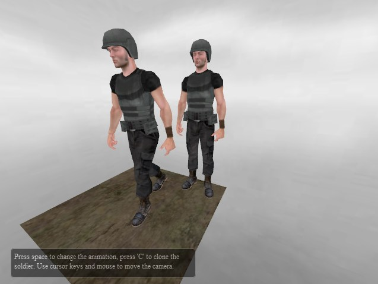
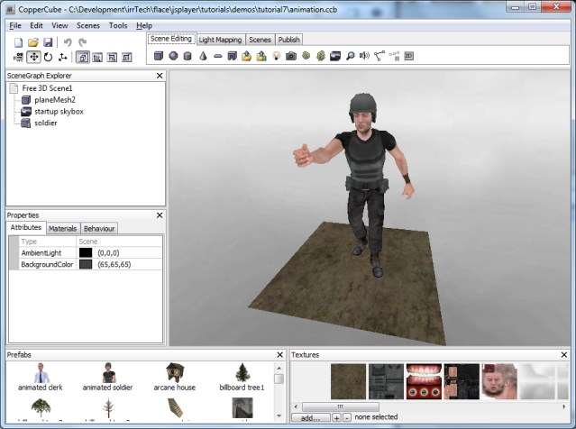

CopperLicht API Documentation
All tutorials
CopperLicht Tutorial: Character Animation
This tutorial demonstrates how to do character animation in CopperLicht.
The final result of this tutorial will look about like this:

A character which plays animations when a key is pressed and his clones.
A character which plays animations when a key is pressed and his clones.
- Show live demo of this tutorial
- Download this tutorial as zip archive.
Creating the scene
To import your animated 3d mesh, we need the CopperCube editor. Import any animated 3d character or use one of the prefabs which come with CopperCube and place it in your scene. Maybe also add a ground and a skybox to make the scene look more interesting, but this part is optional. Our scene should then look like this:
In order for this example to work, set the name the animated mesh to 'soldier' using the properties window in CopperCube.
Note: When publishing your CopperCube scene as WebGL/JavaScript, your animated mesh may not appear in the .html page which is generated by CopperCube. This is because older versions of CopperCube include a CopperLicht version which does not yet support animated Meshes in WebGL. The scene will work anyway, the mesh is still in the .ccbjs or .ccbz file. You can either ignore this or replace the copperlicht.js written out by copperCube with the latest CopperLicht.js from the CopperLicht SDK.
In the zip archive of this tutorial, you'll find a .ccb file named animation.ccb which contains exactly this example, you can also use this one.
Use CopperCube to save the scene into a directory of your choice and publish the scene as WebGL/JavaScript (Choose Tools -> Test as JavaScript/WebGL). This will create a .ccbjs or .ccbz file with this scene which we can load using CopperLicht.
Writing CopperLicht code
Now create a .html file in that directory and paste the following code into it. What it does will be explained in detail below.
<html>
<head>
<meta http-equiv="Content-Type" content="text/html; charset=iso-8859-1">
<script type="text/javascript" src="copperlichtdata/copperlicht.js"></script>
</head>
<body>
<b>Tutorial 07: Character Animation.</b><br/>
Demonstrates how to character animation / play skeletal animations<br/><br/>
<div style="width:640px; margin:auto; position:relative; font-size: 9pt; color: #777777;">
<canvas id="3darea" width="640" height="480" style="background-color:#000000">
</canvas>
<div style="display:block; color:#ffffff; padding:5px; position:absolute; left:20px; top:420px;
background-color:#000000; height:37px; width:300px; border-radius:5px;
border:1px solid #777777; opacity:0.5;" id="helptext">
Press space to change the animation, press 'C' to clone the soldier.
Use cursor keys and mouse to move the camera.
</div>
</div>
<script type="text/javascript">
<!--
var engine = startCopperLichtFromFile('3darea', 'copperlichtdata/animation.ccbjs');
// every time the user presses space, we want to do a collision test with the wall
// and create a cube where we hit the wall
var lastPlayedAnimation = 0;
document.onkeyup = function(event)
{
var scene = engine.getScene();
if (!scene)
return;
// soldier is an AnimatedMeshSceneNode.
var soldier = scene.getSceneNodeFromName('soldier');
if (soldier)
{
if (event.keyCode == 32) // space has been pressed
{
// switch to next animation
// select the next animation:
var animations = ['look', 'walk', 'attack', 'die'];
++lastPlayedAnimation;
if (lastPlayedAnimation > animations.length - 1)
lastPlayedAnimation = 0;
var nextAnimationName = animations[lastPlayedAnimation];
// and set it to be played
soldier.setAnimation(nextAnimationName);
}
else
if (event.keyCode == 67 || event.keyCode == 99) // 'c' has been pressed
{
// clone soldier
var clone = soldier.createClone(scene.getRootSceneNode());
clone.Pos.X += (Math.random() * 50) - 25;
clone.Pos.Z += (Math.random() * 50) - 25;
}
}
// we need to call the key handler of the 3d engine as well, so that the user is
// able to move the camera using the keys
engine.handleKeyUp(event);
};
-->
</script>
</body>
</html>
What the code does
As always, the first few lines of the html code are creating a canvas element inside a container. Inside this container, there is a <div>, used for the 2d overlay. The style of these divs with its absolute positioning is making it possible to move them over the canvas:<html> <html> <head> <meta http-equiv="Content-Type" content="text/html; charset=iso-8859-1"> <script type="text/javascript" src="copperlichtdata/copperlicht.js"></script> </head> <body> <b>Tutorial 07: Character Animation.</b><br/> Demonstrates how to character animation / play skeletal animations<br/><br/> <div style="width:640px; margin:auto; position:relative; font-size: 9pt; color: #777777;"> <canvas id="3darea" width="640" height="480" style="background-color:#000000"> </canvas> <div style="display:block; color:#ffffff; padding:5px; position:absolute; left:20px; top:420px; background-color:#000000; height:37px; width:300px; border-radius:5px; border:1px solid #777777; opacity:0.5;" id="helptext"> Press space to change the animation, press 'C' to clone the soldier. Use cursor keys and mouse to move the camera. </div> </div>So let's start with the javascript code. First, we simply initialize the 3d engine and tell it to load the scene file we created in the editor. You might have to adjust the file name of the .ccbjs file to fit the name you picked when saving the scene.
<script type="text/javascript">
<!--
var engine = startCopperLichtFromFile('3darea', 'copperlichtdata/animation.ccbjs');
Next, we register our own function to intercept key events: If the user presses 'space', we want the soldier in the scene
play another animation, and if the user presses the key 'c', we want to create a clone of that soldier at a random position.
For this, we first need to find the scene node of the soldier in the scene. We search for it by using it's name in
scene.getSceneNodeFromName(). If you named the scene node of the animated mesh differently, you'll have to adjust that name in the code.
document.onkeyup = function(event)
{
var scene = engine.getScene();
if (!scene)
return;
// soldier is an AnimatedMeshSceneNode.
var soldier = scene.getSceneNodeFromName('soldier');
if (soldier)
{
Next, do something depending on the pressed key. If the user pressed space (key code 32), then play an animation. The soldier in this example has the animations 'look', 'walk', 'attack' and 'die'.
If your mesh has differently named animations, you should adjust the code in this place. Alternatively, you can also simply enumerate the animations of this model using soldier.getNamedAnimationCount()
and soldier.getNamedAnimationInfo(). But anyway how you are dogin it, it's basically just calling the function soldier.setAnimation() then, to switch to another animation.When the user presses the key 'C' (keycode 67 or 99), we create a copy of the soldier and place it at a random position.
if (event.keyCode == 32) // space has been pressed
{
// switch to next animation
// select the next animation:
var animations = ['look', 'walk', 'attack', 'die'];
++lastPlayedAnimation;
if (lastPlayedAnimation > animations.length - 1)
lastPlayedAnimation = 0;
var nextAnimationName = animations[lastPlayedAnimation];
// and set it to be played
soldier.setAnimation(nextAnimationName);
}
else
if (event.keyCode == 67 || event.keyCode == 99) // 'c' has been pressed
{
// clone soldier
var clone = soldier.createClone(scene.getRootSceneNode());
clone.Pos.X += (Math.random() * 50) - 25;
clone.Pos.Z += (Math.random() * 50) - 25;
}
// we need to call the key handler of the 3d engine as well, so that the user is
// able to move the camera using the keys
engine.handleKeyUp(event);
};
And basically, that's it. Now you know how to use skeletal animated characters in CopperLicht.More Tutorials
© 2011-2018 N.Gebhardt, Ambiera
Documentation generated by JsDoc Toolkit
Documentation generated by JsDoc Toolkit